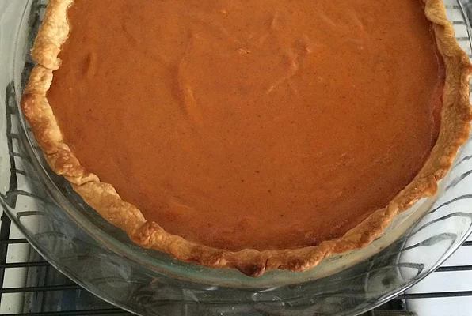

Pumpkin Pie

Description
After many years of experimentation, I've finally perfected what I think is the ideal formula for a rich pumpkin pie that's also much less likely to crack on top. Serve garnished with whipped cream and freshly grated nutmeg.
Ingredients
- 1 (15 ounce) can pumpkin puree
- 3 egg yolks
- 1 large egg
- 1 (14 ounce) can sweetened condensed milk
- 1 teaspoon ground cinnamon
- ½ teaspoon ground ginger
- ½ teaspoon fine salt
- ¼ teaspoon freshly grated nutmeg
- ⅛ teaspoon Chinese 5-spice powder
- 1 9-inch unbaked pie crust (see footnote for recipe link)
Steps
- Preheat oven to 425 degrees F (220 degrees C).
- Whisk together pumpkin puree, egg yolks, and egg in a large bowl until smooth. Add sweetened condensed milk, cinnamon, ginger, salt, nutmeg, and Chinese 5-spice powder; whisk until thoroughly combined.
- Fit pie crust in a 9-inch pie plate and crimp edges.
- Pour filling into the pie shell and lightly tap on the work surface to release any air bubbles.
- Bake in the preheated oven for 15 minutes.
- Reduce heat to 350 degrees F (175 degrees C) and bake until just set in the middle, 30 to 40 more minutes. A paring knife inserted into the filling, 1 inch from the crust, should come out clean. Allow to cool completely before serving.